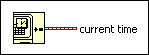

Get Date/Time In Seconds Function
Owning Palette: Timing VIs and Functions
Requires: Base Development System
Returns a timestamp of the current time. LabVIEW calculates this timestamp using the number of seconds elapsed since 12:00 a.m., Friday, January 1, 1904, Universal Time.
Use the To Double Precision Float function to convert the timestamp value to a lower precision, floating-point number.

 Add to the block diagram Add to the block diagram |
 Find on the palette Find on the palette |